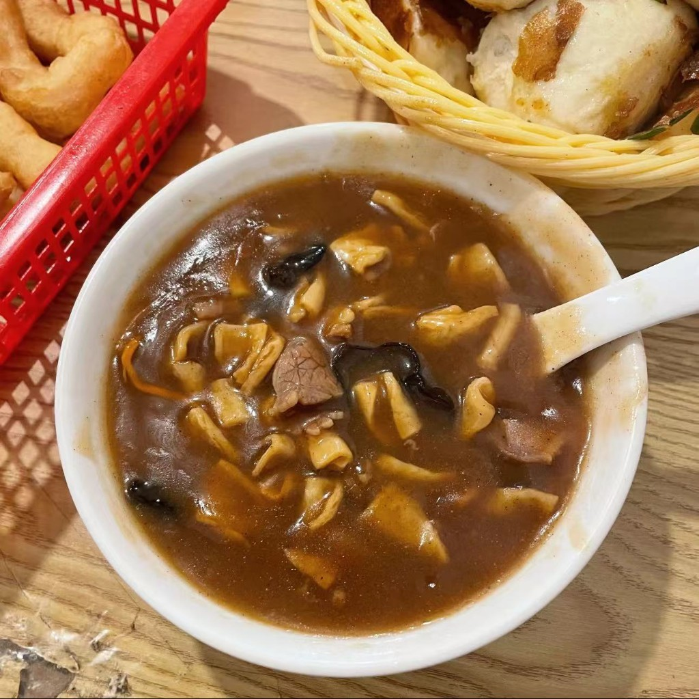
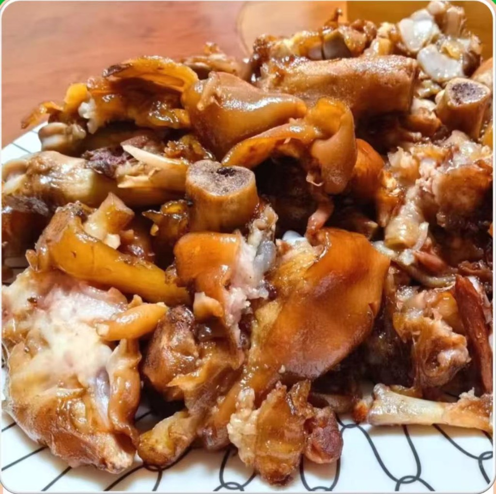
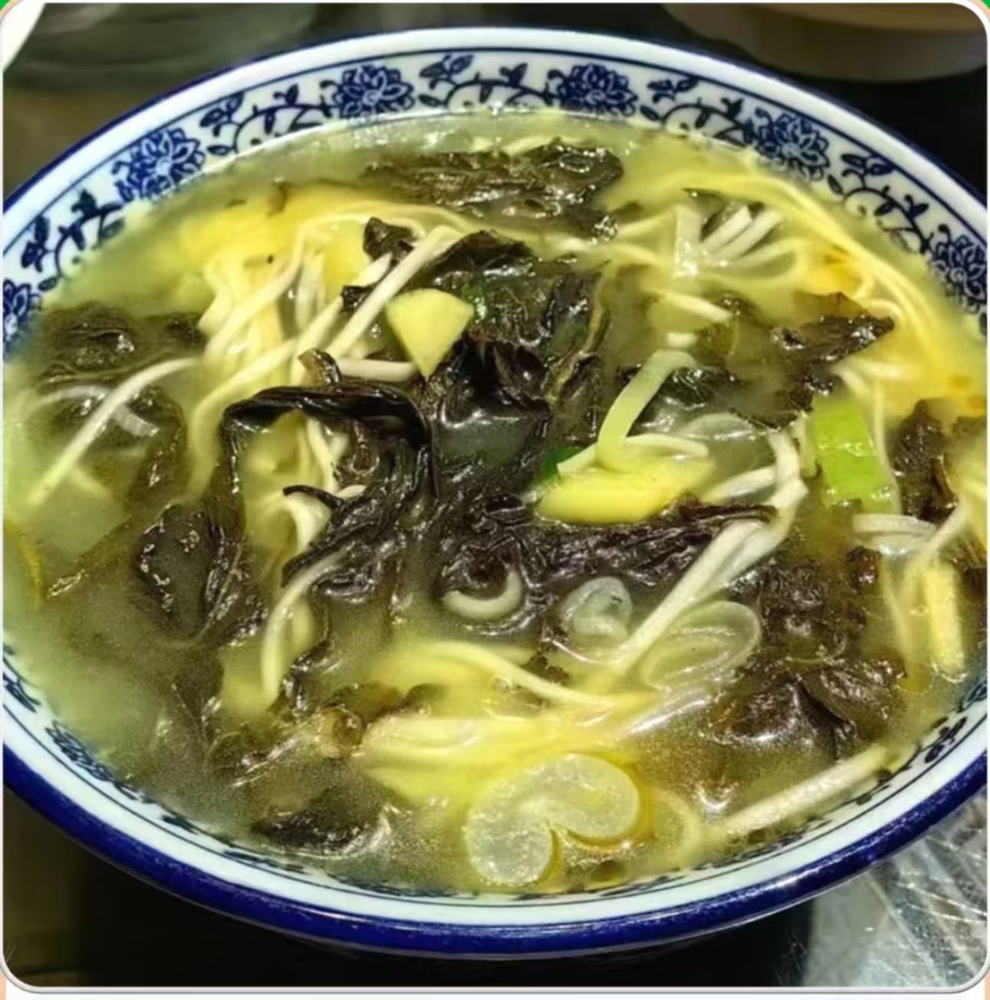
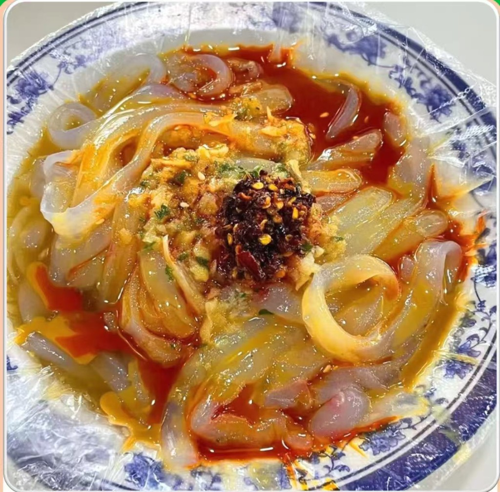
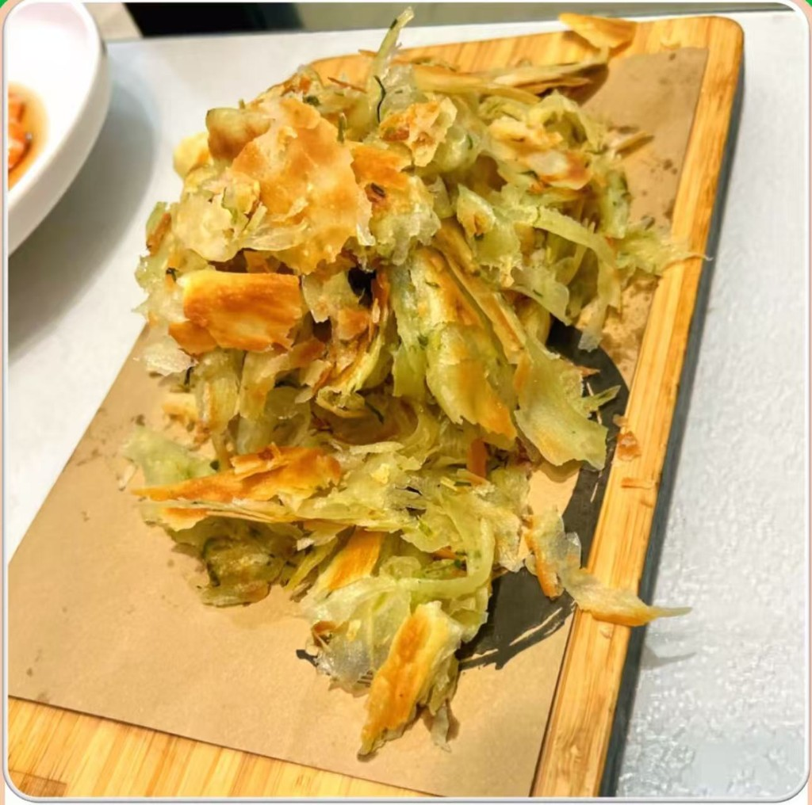

驻马店美食
驻马店地处豫南，饮食文化融合南北风味，既有中原面食的醇厚，又有淮河沿岸的鲜爽。游嵖岈山，不妨顺道品尝这些地道天中美食，为旅途增添一份舌尖上的记忆。

驻马店胡辣汤
胡辣汤是当地人早餐的灵魂，以牛肉、粉条、豆腐皮等为主料，汤底浓郁辛辣，常配水煎包、油条或豆腐脑“两掺”食用。

塔桥猪蹄
市级非物质文化遗产，起源于清朝康熙年间。色泽红亮，口感软糯，蹄筋劲道爽口，蹄皮入口即化，味醇郁香浓，肥而不腻。

芝麻叶豆面
以干芝麻叶和花生豆为主料，花生豆打成浆后与手擀面条同煮，加入芝麻叶及小葱、花椒等调料，口感层次丰富，酸辣开胃，是驻马店街头常见的速食选择。

确山凉粉
以绿豆淀粉制成，口感爽滑细腻，当地人常用方言“喝凉粉”形容其入口即化的特点。凉粉搭配油辣子、芝麻酱和蒜汁，酸辣开胃，兼具清热解暑的功效，是夏季消暑的佳品。

顿岗油馍
以高筋面粉和二十余种秘制香料为原料，采用传统地锅烙制而成。成品外皮金黄酥脆，内里分层柔软，咬一口满嘴焦香，曾是宫廷贡品，传承至今已有十五代历史。